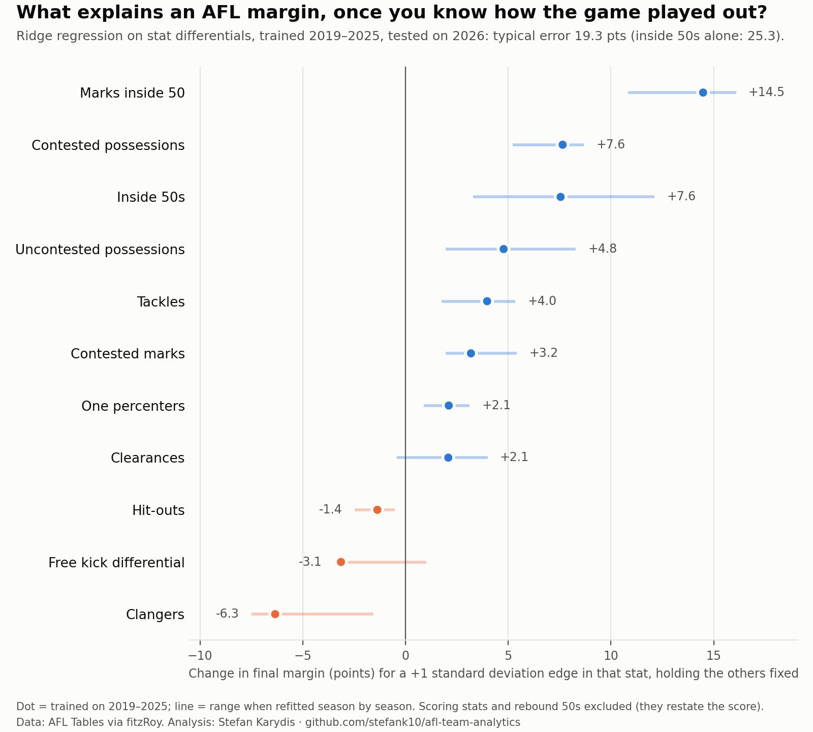

AFL team analytics
- The question
- Which team stats reflect how a club genuinely plays, and what actually explains a match margin? Most stat talk mixes real signal with week-to-week noise.
- What I built
- A reproducible Python project on public AFL data from 2019 to 2026. It tests the data against official results, measures how repeatable each team stat is, models the margin (trained on 2019 to 2025, tested on the unseen 2026 season) and maps the style of all 18 clubs.
- What it showed
- The model cut the typical error from 25.3 points (inside 50s alone) to 19.3. Along the way I caught a model that looked too good: rebound 50s were rebuilding the scoreboard, so they came out and a test now stops it happening again. I chose the simpler model on purpose, because a coach has to be able to read it.
- Tools
- Python (pandas, scikit-learn, statsmodels), R (fitzRoy), pytest, Git, AI coding agent

